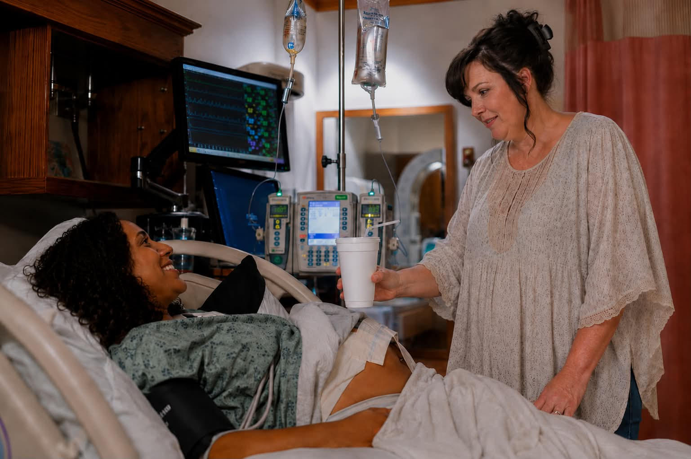

High-Risk Birth Support
Continuous, trauma-informed support for complex pregnancies: hypertension, preeclampsia, multiples, previous loss, VBAC, and more.
A complex pregnancy means navigating terminology, systems, and fear all at once. I provide continuous, trauma-informed support so you feel informed and advocated for at every step.
Conditions I frequently support include hypertension, preeclampsia, diabetes, preterm risk, multiples, previous loss, placental concerns, VBAC, and cesarean births.
Includes
- Comprehensive initial consultation and health history review
- Two prenatal visits for birth planning and education
- Continuous labor and delivery support (vaginal, VBAC, or cesarean)
- Up to 10 postpartum daytime visits (40 hours)
- Unlimited text support throughout pregnancy and postpartum
- Overnight care available as add-on

Postpartum Support
Flexible fourth-trimester care including newborn guidance, lactation support, household help, and emotional wellness check-ins.
Your body and mind need care long after the hospital sends you home. Whether your fourth trimester brings joy, challenge, or grief, I help you build the village around you.
Postpartum care is flexible and tailored to what you actually need, not a one-size-fits-all visit count.
May include
- Newborn guidance and care education
- Lactation support and feeding troubleshooting
- Light household assistance
- Emotional wellness check-ins
- Partner and family support
- Referrals to community resources
Bereavement & Loss Support
Grounded, trauma-informed presence through miscarriage, stillbirth, or infant loss, with follow-up care in the weeks that follow.
Few experiences run as deep as the loss of a baby or pregnancy. I offer a grounded, trauma-informed presence through miscarriage, stillbirth, or infant loss, and in the weeks that follow.
Your body deserves care, even in grief.
Includes
- Calm, reliable presence during labor and delivery
- Memory-making and bonding opportunities
- Postpartum physical recovery guidance
- Partner and family support
- Follow-up visits during the grieving process
- Unlimited text support

Lactation Specialist
Calm, judgment-free support for any feeding journey: breastfeeding, formula, or combination.
No matter how you choose to feed your baby, you deserve calm, judgment-free support. I help you establish rhythms, build confidence, and troubleshoot the challenges no one warned you about.
Breastfeeding, formula feeding, combination feeding, all feeding journeys are welcome here.
Support includes
- Latch support and positioning
- Supply concerns and pumping guidance
- Formula preparation and feeding schedules
- Weaning support
- Referrals to IBCLC when needed

Birth Plan Education
Evidence-based guidance to build a confident birth plan and learn how to advocate for yourself in any birth setting.
Build a calm, confident birth plan with evidence-based guidance. We cover birth options, pain management preferences, emergency planning, and how to advocate for yourself in any birth setting.
You leave the session knowing your options and able to communicate them clearly with your care team.
We cover
- Birth setting options (hospital, birth center, home)
- Pain management preferences
- Interventions and your right to informed consent
- Cesarean planning if relevant
- Immediate postpartum preferences (skin-to-skin, cord clamping, etc.)

Overnight Nourish & Support
Dedicated 8-hour overnight newborn care so you sleep deeply and wake to a detailed morning report.
Rest is essential for healing, especially during the first 40 nights after birth. I provide overnight newborn care so you can sleep deeply and wake up to a detailed report.
During each overnight shift
- All feedings and soothing (8-hour block)
- Light household reset
- Detailed overnight report
- Morning handoff briefing
Child Passenger Safety (CPST)
Certified car seat inspection and installation ensuring your baby travels safely from the very first ride.
As a certified Child Passenger Safety Technician, I make sure your car seat is installed correctly and your baby travels safely from day one. This is not a checkbox. An incorrectly installed car seat is one of the most common and preventable safety issues for newborns.
FREE with every packageIncludes
- Full car seat inspection and installation
- Education on proper use and common mistakes
- Guidance on when to transition to the next seat stage
Safe Sleep Ambassador
Evidence-based safe sleep education to reduce SIDS risk and build a sleep environment you feel fully confident about.
As a certified Safe Sleep Ambassador, I educate families on evidence-based safe sleep guidelines, reducing the risk of SIDS and sleep-related infant death. You deserve a sleep environment you can feel fully confident about.
We cover
- The ABCs of safe sleep (Alone, Back, Crib)
- Safe sleep environment setup
- Common myths and misconceptions
- Room-sharing vs. bed-sharing guidance